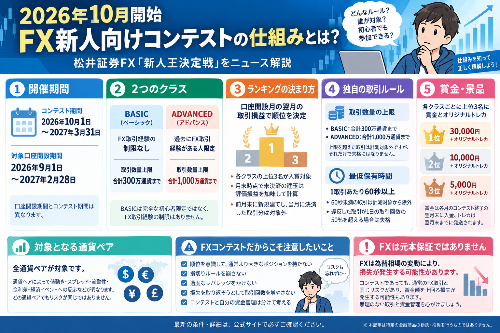

松井証券FX「新人王決定戦」とは？2026年10月開始のFXコンテストを初心者向けに解説
松井証券FXで2026年10月から「新人王決定戦」がスタート

松井証券FXでは、新規口座開設者を対象としたFXコンテスト
「松井証券FX 新人王決定戦」が実施されます。
公式情報では、コンテスト期間は
2026年10月1日～2027年3月31日です。
対象となる新規口座開設期間は
2026年9月1日～2027年2月28日となっています。
コンテストでは、口座開設月の翌月の対象取引による損益をもとに順位が決まり、
BASICとADVANCEDの各クラスで上位3名が入賞対象となります。
ただし、FXはコンテストであっても通常のFX取引と同様に
元本が保証されているものではなく、損失が発生する可能性があります。
順位を意識して取引数量やリスクを必要以上に大きくすることには注意が必要です。
この記事で確認するポイント
- 新人王決定戦とはどのようなコンテストなのか
- 口座開設とランキング対象月の関係
- BASIC・ADVANCEDの違い
- 取引数量上限や60秒ルール
- 順位の計算方法
- 賞金とオリジナルトレカ
- FXコンテストで注意したい資金管理とレバレッジ
※本記事のコンテスト条件は、2026年9月11日時点の 松井証券公式「松井証券FX 新人王決定戦」の掲載内容をもとに整理しています。 条件が変更される可能性もあるため、参加を検討する場合は必ず最新の公式情報をご確認ください。
松井証券FX「新人王決定戦」とは？
「新人王決定戦」は、松井証券FXで新たに口座を開設した人を対象に行われるFXコンテストです。
対象となる新規口座開設後、期限までにコンテストへエントリーし、
口座開設月の翌月の対象取引による損益によって順位を競います。
コンテストには
BASIC（ベーシック）と
ADVANCED（アドバンス）
の2クラスがあります。
「新人王」という名称から、FXを一度も取引したことがない人だけが対象と思うかもしれませんが、
BASICは公式上、FX取引経験について「制限なし」です。
またADVANCEDは、過去にFX取引経験がある人限定のクラスです。
そのため、単純な「完全なFX初心者だけの大会」という仕組みではありません。
開催期間はいつ？
新人王決定戦では、 コンテストそのものの開催期間と 対象となる口座開設期間が異なります。
| 項目 | 期間 |
|---|---|
| コンテスト期間 | 2026年10月1日～2027年3月31日 |
| 対象口座開設期間 | 2026年9月1日～2027年2月28日 |
例えば、2026年9月に対象となる新規口座開設をした場合、
翌月である2026年10月の対象取引がランキング計測の対象になります。
「2026年10月からコンテストが始まるから、10月に口座を開設しなければならない」
という意味ではありません。
いつの取引がランキング対象になるの？
ランキングの対象となるのは、 新規口座開設月の翌月の取引です。
9月に新規口座開設した場合
2026年9月に新規口座開設
↓
2026年10月が対象取引月
↓
10月の対象取引による損益を計測
公式ルールでは、
前月末に新規建てし、当月に決済した取引分は対象外
とされています。
つまり、ランキング対象月に決済した取引であっても、
その建玉を前月末に新規建てしていた場合はコンテストの計測対象にはなりません。
エントリーはいつまで？
新人王決定戦は、対象期間中に口座を開設しただけで自動的に参加となるわけではありません。
コンテストへのエントリーが必要です。
公式情報では、
新規口座開設月の翌月末までにエントリーする必要があります。
また、翌月末までであれば
エントリーのタイミングは問わない
とされています。
口座開設日とランキング対象月、エントリー期限はそれぞれ意味が異なるため、 参加を検討する場合は自分の口座開設日を基準に確認することが大切です。
BASICとADVANCEDの違いは？
新人王決定戦にはBASICとADVANCEDの2つのクラスがあります。 主な違いはFX取引経験の条件と、コンテストで計測される取引数量の上限です。
| 項目 | BASIC | ADVANCED |
|---|---|---|
| FX取引経験 | 制限なし | FX取引経験者のみ |
| 取引数量上限 | 合計300万通貨まで | 合計1,000万通貨まで |
BASICは名称から「FX未経験者限定」と受け取りやすいですが、
公式条件ではFX取引経験の制限なしとなっています。
一方、ADVANCEDは
過去にFX取引経験がある人限定のクラスです。
順位はどうやって決まるの？
コンテストの入賞者は、
口座開設月の翌月の対象取引による損益
で決定されます。
BASIC・ADVANCEDそれぞれで
上位3名が入賞対象です。
月末に未決済の建玉がある場合
公式ルールでは、口座開設月の翌月末時点で決済されていない建玉については、
評価損益を加味して計算されます。
そのため、コンテストのランキング計測だけを理由に
月末ですべての保有建玉を決済する必要はないとされています。
なお、ランキングは利益額だけに注目しがちですが、 FX取引そのものには損失が発生する可能性があります。 順位と自分自身の資金管理は分けて考えることが重要です。
取引数量の上限を超えたらどうなる？
コンテストでは、ランキングの計測対象となる取引数量に上限があります。
- BASIC：合計300万通貨まで
- ADVANCED：合計1,000万通貨まで
公式ルールでは、
取引数量上限を超えた取引による損益はコンテストの計測対象外
となります。
一方で、取引数量上限を超えたという理由だけで
失格になるわけではありません。
また、この上限はコンテストで計測する取引数量についてのルールです。
「上限に達したら松井証券FXでFX取引そのものができなくなる」という意味ではありません。
最低保有時間「60秒」のルールとは？
新人王決定戦では、 1取引あたりの建玉の最低保有時間が60秒以上 と定められています。
60秒未満となった違反取引については コンテストの計測から除外されます。
さらに公式ルールでは、 最低保有時間に違反した取引が1日の取引回数の50％を超える場合は失格 とされています。
取引時間のルールは通常のFX取引の勝ち負けとは別に、 コンテスト独自の計測条件として確認しておく必要があります。
新人王になると何がもらえる？
各クラスで獲得損益が上位となった3名には、 賞金とオリジナルトレカが用意されています。
| 順位 | 景品 |
|---|---|
| 1位・新人王 | 30,000円＋オリジナルトレカ |
| 2位 | 10,000円＋オリジナルトレカ |
| 3位 | 5,000円＋オリジナルトレカ |
上記は各クラスごとの上位3名が対象です。
公式情報では、賞金は
各月のコンテスト終了の翌月末に入金されます。
オリジナルトレカは
各月のコンテスト終了の翌月末までに発送
される予定です。
参加者全員が賞金や景品を受け取れるわけではありません。
対象となる通貨ペアは？
公式情報では、 全通貨ペアがコンテストの対象です。
ただし「全通貨ペアが対象」ということは、 どの通貨ペアでもリスクが同じという意味ではありません。
- 価格の動きやすさ
- スプレッド
- 市場の流動性
- 国ごとの金利差
- 経済指標や金融政策への反応
- 政治・地政学リスク
などは通貨ペアによって異なります。
コンテストを理由に、普段理解していない通貨ペアを無理に取引する必要はありません。
FXコンテストだからこそ注意したいこと
ランキング形式のコンテストでは、 普段のFX取引とは違った心理が働く可能性があります。
上位を狙いたい
↓
もっと利益を出したい
↓
取引数量を増やしたくなる
↓
通常より大きなリスクを取ってしまう
しかしFXでは、利益が大きくなる可能性だけでなく、 損失も大きくなる可能性があります。
特に注意したい行動
- ランキングのために通常より大きなポジションを持つ
- 事前に決めた損切りルールを崩す
- 必要以上に高いレバレッジを利用する
- 損失を取り返そうとして取引回数を増やす
- 普段なら行わない取引を順位のために行う
例えば1位の賞金は30,000円ですが、
FX取引では賞金額を上回る損失が発生する可能性もあります。
コンテストへ参加すること自体を否定する必要はありませんが、
「コンテストのランキング」と「自分の資金を守るルール」は別のもの
と考えることが大切です。
FXのレバレッジとは？
FXでは、証拠金を預けることで、
その証拠金を上回る金額の取引ができる仕組みがあります。
これをレバレッジと呼びます。
レバレッジによって少ない資金でも大きな金額を取引できますが、
値動きによる損益の影響も大きくなります。
そのため、
「大きなポジションを持てる＝大きなポジションを持つべき」ではありません。
レバレッジによって利益の可能性が大きくなる場合、その反対に損失の影響も大きくなります。 特にランキングを意識する場面では、取引数量を必要以上に増やさないよう注意が必要です。
コンテストでも資金管理が重要
FX取引で重要なのは、 「何位を取れるか」だけではありません。
- 1回の取引でどの程度の損失まで許容するのか
- 自分の資金に対してポジションが大きすぎないか
- 損切りする条件を事前に決めているか
- 利益と損失のバランスをどう考えるか
- 損失が出た後も同じルールを守れるか
といった資金管理・リスク管理の考え方が重要です。
詳しくは、 「資金管理とは？」、 「ポジションサイズとは？」、 「損切りラインの決め方とは？」、 「リスクリワードとは？」 も参考になります。
コンテストだから特別な資金管理をするのではなく、 通常のFX取引と同じように、 自分が許容できる損失を基準にポジションを考えること が大切です。
松井証券FXとは？
新人王決定戦は、松井証券が提供するFXサービス 「松井証券FX」で実施される企画です。
本記事では新人王決定戦のルールを中心に解説しています。
松井証券FXそのもののサービス内容については、
「松井証券FX」の個別紹介ページ
で確認できます。
初心者が新人王決定戦を確認するときのポイント
- 自分の口座開設日
- ランキング対象となる取引月
- エントリー期限
- BASIC・ADVANCEDの参加条件
- 取引数量上限
- 1取引60秒以上という最低保有時間
- ランキングの計算方法
- 賞金・オリジナルトレカの条件
- FXそのものの損失・レバレッジリスク
- 松井証券公式ページに掲載されている最新ルール
キャンペーン・コンテスト条件は変更される可能性があります。
実際に参加する場合は、必ず松井証券公式の最新ページで条件や注意事項をご確認ください。
松井証券FX「新人王決定戦」に関するよくある質問
松井証券FX「新人王決定戦」とは何ですか？
松井証券FXが新規口座開設者を対象に実施するFXコンテストです。 エントリー後、口座開設月の翌月の対象取引による損益をもとに順位を決定します。
新人王決定戦はいつ開催されますか？
公式情報ではコンテスト期間は2026年10月1日～2027年3月31日です。 対象口座開設期間は2026年9月1日～2027年2月28日です。
誰でも参加できますか？
対象期間中に新規口座開設し、口座開設月の翌月末までにエントリーすることが基本条件です。 また、ADVANCEDは過去にFX取引経験がある人限定です。 詳細な参加条件は最新の松井証券公式情報をご確認ください。
BASICとADVANCEDの違いは何ですか？
BASICはFX取引経験の制限がなく、計測対象となる取引数量上限は合計300万通貨までです。 ADVANCEDは過去にFX取引経験がある人限定で、取引数量上限は合計1,000万通貨までです。
いつのFX取引がランキング対象になりますか？
新規口座開設月の翌月の対象取引です。 例えば2026年9月に対象となる口座開設をした場合、2026年10月の対象取引が計測されます。 前月末に新規建てして当月に決済した取引分は対象外です。
順位はどのように決まりますか？
口座開設月の翌月の対象取引による損益で決定されます。 各クラスで上位3名が入賞対象です。 月末時点で未決済の建玉については評価損益を加味して計算されます。
取引数量上限を超えると失格になりますか？
公式ルールでは、上限を超えた取引による損益はコンテストの計測対象外となりますが、 それだけで失格とはなりません。
60秒未満で決済するとどうなりますか？
コンテストでは1取引あたりの建玉について最低60秒以上の保有時間が必要です。 違反した取引は計測から除外されます。 また、違反した取引が1日の取引回数の50％を超える場合は失格となります。
賞金はいくらですか？
各クラスごとに1位は30,000円＋オリジナルトレカ、 2位は10,000円＋オリジナルトレカ、 3位は5,000円＋オリジナルトレカです。
FX初心者が参加するときに注意することはありますか？
FXは元本保証ではなく損失が発生する可能性があります。 ランキングを意識して通常より大きなポジションを持ったり、 過度なレバレッジをかけたりすると損失も大きくなる可能性があります。 コンテストと自分自身の資金管理は分けて考えることが重要です。
まとめ｜コンテストでもFXのリスクは変わらない
- 松井証券FX「新人王決定戦」は、新規口座開設者を対象としたFXコンテストです。
- コンテスト期間は2026年10月1日～2027年3月31日です。
- 対象口座開設期間は2026年9月1日～2027年2月28日です。
- 口座開設月の翌月の対象取引損益によって順位が決まります。
- 新規口座開設月の翌月末までにエントリーが必要です。
- BASICとADVANCEDの2クラスがあります。
- BASICはFX取引経験の制限なし、ADVANCEDはFX取引経験者限定です。
- BASICは合計300万通貨、ADVANCEDは合計1,000万通貨までが計測対象となる取引数量上限です。
- 各クラス上位3名に賞金とオリジナルトレカがあります。
- 1取引あたり60秒以上という最低保有時間など、コンテスト独自のルールがあります。
- コンテストであってもFXの損失・レバレッジリスクは通常の取引と変わりません。
- ランキングだけを目的に、通常より大きなリスクを取らないことが重要です。
- 参加を検討する場合は、必ず松井証券公式ページで最新の条件をご確認ください。
公式情報・出典
コンテスト期間、対象口座開設期間、参加条件、対象取引、対象通貨ペア、 BASIC・ADVANCEDの条件、取引数量上限、ランキング計測方法、 最低保有時間、賞金・景品については、 松井証券公式「松井証券FX 新人王決定戦」を確認しています。
確認日：2026年9月11日
一般ユーザー目線の体験でおすすめの会社をご紹介

ご利用にあたっての注意事項
本記事は松井証券FX「新人王決定戦」およびFXに関する一般的な情報提供・金融教育を目的としており、
コンテストへの参加やFX取引を推奨・勧誘するものではありません。
FX（外国為替証拠金取引）は元本や利益が保証された金融商品ではありません。
為替相場の変動、金利差、市場流動性、経済指標、政治・地政学的な出来事などにより損失が発生する可能性があります。
また、レバレッジを利用することで、価格変動による損益の影響が大きくなる場合があります。
コンテストのランキングや賞金を目的として取引数量を増やすことが、
利益や入賞につながることを保証するものではありません。
賞金額を上回る損失が発生する可能性もあります。
コンテストの条件・期間・対象者・計測方法・景品その他のルールは変更される場合があります。
実際に参加・取引を行う際は松井証券公式サイトの最新情報、
契約締結前交付書面、取引ルール、リスク説明等を必ずご確認のうえ、
ご自身の判断と責任でお取引ください。